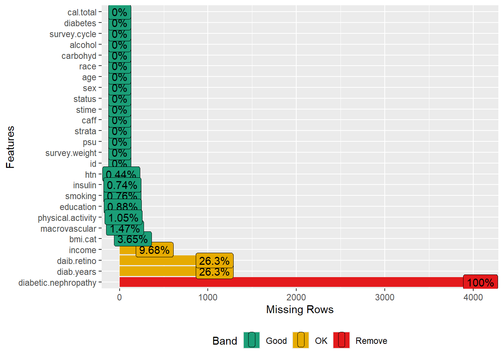

Survival analysis: NHANES
The tutorial demonstrates analyzing complex survey data (NHANES) with mortality as a survival outcome. See the tutorial in the previous chapter on linking public-use US mortality data with the NHANES.
We will explore the relationship between caffeine consumption and mortality in adults with diabetes using NHANES 1999-2010 datasets. We will follow the following article by Neves et al. (2018).
Load required packages
Load datasets
Let us load NHANES 1999-2000, 2001-2002, 2003-2004, 2005-2006, 2007-2008, and 2009-2010 datasets and merged all cycles.
# Load
load("Data/nonbinary/coffee.RData")
ls()
#> [1] "dat.analytic1999" "dat.analytic2001" "dat.analytic2003" "dat.analytic2005"
#> [5] "dat.analytic2007" "dat.analytic2009"
# Merge all cycles
dat.full <- rbind(dat.analytic1999, dat.analytic2001, dat.analytic2003,
dat.analytic2005, dat.analytic2007, dat.analytic2009)
head(dat.full)The merged dataset contains 62,160 subjects with 26 relevant variables:
- id: Respondent sequence/ID number
- survey.weight: Full sample 2 year weights
- psu: Masked pseudo-PSU
- strata: Masked pseudo-stratum
- caff: Caffeine (exposure variable)
- stime: Follow-up time (time from interview date to death or censoring)
- status: Mortality status
- sex: Sex
- age: Age in years
- race: Race/ethnicity
- income: Annual household income
- smoking: Smoking status
- diabetic.nephropathy: Diabetic nephropathy (no data)
- bmi.cat: BMI - categorical
- education: Education level
- carbohyd: Carbohydrate in gm
- alcohol: Alcohol consumption
- diab.years: Years since diabetes
- htn: Hypertension
- daib.retino: Diabetes retinopathy
- macrovascular: Macrovascular complications
- insulin: Insulin
- survey.cycle: Survey cycle
- physical.activity: Physical activity
- diabetes: Diabetes status
- cal.total: Total calories in kcal
Data pre-processing
Eligibility criteria
The authors considered adults aged 18 years or more, only diabetic, and total calories between 500 and 3500.
# Total samples in the merged dataset
nrow(dat.full) # N = 62,160
#> [1] 62160
# Age >= 18 years
dat2 <- subset(dat.full, age >= 18)
nrow(dat2) # N = 35,379
#> [1] 35379
# With diabetes
dat3 <- subset(dat2, diabetes == "Yes")
nrow(dat3) # N = 4,687 - numbers don't match with the paper (N = 4,544)
#> [1] 4687
# Implausible alimentary reports
dat4 <- subset(dat3, cal.total >= 500 & cal.total <= 3500)
nrow(dat4) # N = 4,083 - numbers don't match with the paper (N = 3,948)
#> [1] 4083Complete case data
Let us drop missing values in the exposure and outcome:
# Drop missing exposure and outcome
dat <- dat4[complete.cases(dat4$id),]
dat <- dat[complete.cases(dat$caff),]
dat <- dat[complete.cases(dat$status),]
dat <- dat[complete.cases(dat$stime),] # N = 4,080
dim(dat)
#> [1] 4080 26
# Missing plot
plot_missing(dat)
Now, let us drop variables with high missingness for this exercise. As explained in the Missing data analysis chapter, a better approach could be imputing missing values under the missing at random assumption.
Table 1
Now, let us create Table 1 stratified by coffee consumption (exposure), separately for males and females, as done in the article.
vars <- c("age", "race", "education", "smoking", "alcohol", "carbohyd", "physical.activity",
"bmi.cat", "htn", "macrovascular", "insulin", "survey.cycle")
tab1a <- CreateTableOne(vars = vars, strata = "caff", data = dat[dat$sex=="Female",],
test = F)
tab1b <- CreateTableOne(vars = vars, strata = "caff", data = dat[dat$sex=="Male",],
test = F)
tab1 <- list(Female = tab1a, Male = tab1b)
print(tab1, showAllLevels = T, smd = T)
#> $Female
#> Stratified by caff
#> level No consumption <100 mg/day
#> n 203 916
#> age (mean (SD)) 59.33 (15.14) 62.92 (14.02)
#> race (%) Non-Hispanic White 38 (18.7) 286 (31.2)
#> Non-Hispanic Black 96 (47.3) 284 (31.0)
#> Mexican American 47 (23.2) 228 (24.9)
#> Other Hispanic 10 ( 4.9) 80 ( 8.7)
#> Other race 12 ( 5.9) 38 ( 4.1)
#> education (%) Less than 9th grade 58 (28.6) 238 (26.0)
#> 9-11th grade 48 (23.6) 182 (19.9)
#> High school grade 43 (21.2) 224 (24.5)
#> Some college 39 (19.2) 209 (22.8)
#> College graduate or above 15 ( 7.4) 63 ( 6.9)
#> smoking (%) Never smoker 143 (70.4) 598 (65.3)
#> Current smoker 24 (11.8) 127 (13.9)
#> Former smoker 36 (17.7) 191 (20.9)
#> alcohol (%) No consumption 192 (94.6) 826 (90.2)
#> <20 grams/day 4 ( 2.0) 69 ( 7.5)
#> 20+ grams/day 7 ( 3.4) 21 ( 2.3)
#> carbohyd (mean (SD)) 176.17 (73.88) 190.64 (73.34)
#> physical.activity (%) Low 95 (46.8) 393 (42.9)
#> Intermediate 59 (29.1) 309 (33.7)
#> High 49 (24.1) 214 (23.4)
#> bmi.cat (%) <20.0 4 ( 2.0) 6 ( 0.7)
#> 20.0 to <25.0 24 (11.8) 107 (11.7)
#> 25.0 to <30.0 35 (17.2) 254 (27.7)
#> 30.0 to <35.0 45 (22.2) 263 (28.7)
#> 35.0 to <40.0 47 (23.2) 138 (15.1)
#> 40.0+ 48 (23.6) 148 (16.2)
#> htn (%) No 58 (28.6) 273 (29.8)
#> Yes 145 (71.4) 643 (70.2)
#> macrovascular (%) No 166 (81.8) 758 (82.8)
#> Yes 37 (18.2) 158 (17.2)
#> insulin (%) No 156 (76.8) 755 (82.4)
#> Yes 47 (23.2) 161 (17.6)
#> survey.cycle (%) 1999-00 45 (22.2) 111 (12.1)
#> 2001-02 45 (22.2) 98 (10.7)
#> 2003-04 26 (12.8) 127 (13.9)
#> 2005-06 20 ( 9.9) 154 (16.8)
#> 2007-08 37 (18.2) 198 (21.6)
#> 2009-10 30 (14.8) 228 (24.9)
#> Stratified by caff
#> 100-200 mg/day 200+ mg/day SMD
#> n 424 332
#> age (mean (SD)) 62.04 (13.75) 60.19 (13.10) 0.150
#> race (%) 154 (36.3) 189 (56.9) 0.527
#> 108 (25.5) 40 (12.0)
#> 111 (26.2) 69 (20.8)
#> 30 ( 7.1) 20 ( 6.0)
#> 21 ( 5.0) 14 ( 4.2)
#> education (%) 79 (18.6) 56 (16.9) 0.203
#> 89 (21.0) 76 (22.9)
#> 109 (25.7) 81 (24.4)
#> 109 (25.7) 89 (26.8)
#> 38 ( 9.0) 30 ( 9.0)
#> smoking (%) 238 (56.1) 136 (41.0) 0.377
#> 81 (19.1) 119 (35.8)
#> 105 (24.8) 77 (23.2)
#> alcohol (%) 370 (87.3) 283 (85.2) 0.211
#> 38 ( 9.0) 35 (10.5)
#> 16 ( 3.8) 14 ( 4.2)
#> carbohyd (mean (SD)) 193.79 (72.18) 203.36 (76.05) 0.190
#> physical.activity (%) 179 (42.2) 148 (44.6) 0.093
#> 151 (35.6) 117 (35.2)
#> 94 (22.2) 67 (20.2)
#> bmi.cat (%) 7 ( 1.7) 4 ( 1.2) 0.250
#> 40 ( 9.4) 44 (13.3)
#> 109 (25.7) 80 (24.1)
#> 133 (31.4) 82 (24.7)
#> 73 (17.2) 63 (19.0)
#> 62 (14.6) 59 (17.8)
#> htn (%) 123 (29.0) 110 (33.1) 0.052
#> 301 (71.0) 222 (66.9)
#> macrovascular (%) 352 (83.0) 266 (80.1) 0.042
#> 72 (17.0) 66 (19.9)
#> insulin (%) 340 (80.2) 252 (75.9) 0.094
#> 84 (19.8) 80 (24.1)
#> survey.cycle (%) 42 ( 9.9) 46 (13.9) 0.305
#> 53 (12.5) 48 (14.5)
#> 63 (14.9) 46 (13.9)
#> 59 (13.9) 43 (13.0)
#> 111 (26.2) 82 (24.7)
#> 96 (22.6) 67 (20.2)
#>
#> $Male
#> Stratified by caff
#> level No consumption <100 mg/day
#> n 168 707
#> age (mean (SD)) 60.95 (12.68) 62.86 (12.88)
#> race (%) Non-Hispanic White 35 (20.8) 238 (33.7)
#> Non-Hispanic Black 78 (46.4) 209 (29.6)
#> Mexican American 37 (22.0) 190 (26.9)
#> Other Hispanic 13 ( 7.7) 48 ( 6.8)
#> Other race 5 ( 3.0) 22 ( 3.1)
#> education (%) Less than 9th grade 50 (29.8) 194 (27.4)
#> 9-11th grade 41 (24.4) 135 (19.1)
#> High school grade 31 (18.5) 145 (20.5)
#> Some college 30 (17.9) 136 (19.2)
#> College graduate or above 16 ( 9.5) 97 (13.7)
#> smoking (%) Never smoker 72 (42.9) 281 (39.7)
#> Current smoker 34 (20.2) 155 (21.9)
#> Former smoker 62 (36.9) 271 (38.3)
#> alcohol (%) No consumption 131 (78.0) 539 (76.2)
#> <20 grams/day 16 ( 9.5) 96 (13.6)
#> 20+ grams/day 21 (12.5) 72 (10.2)
#> carbohyd (mean (SD)) 195.01 (85.93) 213.00 (80.40)
#> physical.activity (%) Low 63 (37.5) 230 (32.5)
#> Intermediate 54 (32.1) 284 (40.2)
#> High 51 (30.4) 193 (27.3)
#> bmi.cat (%) <20.0 5 ( 3.0) 4 ( 0.6)
#> 20.0 to <25.0 26 (15.5) 95 (13.4)
#> 25.0 to <30.0 53 (31.5) 276 (39.0)
#> 30.0 to <35.0 46 (27.4) 185 (26.2)
#> 35.0 to <40.0 21 (12.5) 95 (13.4)
#> 40.0+ 17 (10.1) 52 ( 7.4)
#> htn (%) No 50 (29.8) 279 (39.5)
#> Yes 118 (70.2) 428 (60.5)
#> macrovascular (%) No 120 (71.4) 526 (74.4)
#> Yes 48 (28.6) 181 (25.6)
#> insulin (%) No 135 (80.4) 571 (80.8)
#> Yes 33 (19.6) 136 (19.2)
#> survey.cycle (%) 1999-00 36 (21.4) 72 (10.2)
#> 2001-02 28 (16.7) 92 (13.0)
#> 2003-04 21 (12.5) 104 (14.7)
#> 2005-06 18 (10.7) 115 (16.3)
#> 2007-08 36 (21.4) 168 (23.8)
#> 2009-10 29 (17.3) 156 (22.1)
#> Stratified by caff
#> 100-200 mg/day 200+ mg/day SMD
#> n 461 569
#> age (mean (SD)) 61.67 (13.66) 61.70 (12.40) 0.074
#> race (%) 214 (46.4) 344 (60.5) 0.575
#> 92 (20.0) 67 (11.8)
#> 90 (19.5) 115 (20.2)
#> 54 (11.7) 26 ( 4.6)
#> 11 ( 2.4) 17 ( 3.0)
#> education (%) 98 (21.3) 97 (17.0) 0.269
#> 79 (17.1) 95 (16.7)
#> 104 (22.6) 125 (22.0)
#> 100 (21.7) 161 (28.3)
#> 80 (17.4) 91 (16.0)
#> smoking (%) 162 (35.1) 153 (26.9) 0.216
#> 109 (23.6) 196 (34.4)
#> 190 (41.2) 220 (38.7)
#> alcohol (%) 349 (75.7) 427 (75.0) 0.080
#> 63 (13.7) 80 (14.1)
#> 49 (10.6) 62 (10.9)
#> carbohyd (mean (SD)) 225.58 (87.51) 237.26 (85.11) 0.273
#> physical.activity (%) 153 (33.2) 195 (34.3) 0.099
#> 177 (38.4) 199 (35.0)
#> 131 (28.4) 175 (30.8)
#> bmi.cat (%) 4 ( 0.9) 4 ( 0.7) 0.181
#> 61 (13.2) 80 (14.1)
#> 169 (36.7) 187 (32.9)
#> 132 (28.6) 146 (25.7)
#> 64 (13.9) 95 (16.7)
#> 31 ( 6.7) 57 (10.0)
#> htn (%) 190 (41.2) 234 (41.1) 0.126
#> 271 (58.8) 335 (58.9)
#> macrovascular (%) 353 (76.6) 412 (72.4) 0.066
#> 108 (23.4) 157 (27.6)
#> insulin (%) 375 (81.3) 449 (78.9) 0.032
#> 86 (18.7) 120 (21.1)
#> survey.cycle (%) 48 (10.4) 64 (11.2) 0.284
#> 59 (12.8) 69 (12.1)
#> 48 (10.4) 106 (18.6)
#> 70 (15.2) 65 (11.4)
#> 112 (24.3) 130 (22.8)
#> 124 (26.9) 135 (23.7)Survey design
The paper analyzed the data separately for males and females. Let us create the survey design:
# Revised weight - weight divided by 6 cycles
dat.full$svy.weight <- dat.full$survey.weight/6
dat$svy.weight <- dat$survey.weight/6
summary(dat$svy.weight)
#> Min. 1st Qu. Median Mean 3rd Qu. Max.
#> 223.2 1760.2 3349.3 4555.9 5817.8 25347.4
# Create an indicator variable
dat.full$miss <- 1
dat.full$miss[dat.full$id %in% dat$id] <- 0
# Set up the design
w.design0 <- svydesign(strata = ~strata, id = ~psu, weights = ~svy.weight,
data = dat.full, nest = TRUE)
# Subset the design
w.design1 <- subset(w.design0, miss == 0)
# Subset the design for females
w.design.f <- subset(w.design1, sex == "Female")
dim(w.design.f)
#> [1] 1875 28
# Subset the design for males
w.design.m <- subset(w.design1, sex == "Male")
dim(w.design.m)
#> [1] 1905 28Kaplan-Meier plot
Let us create the Kaplan-Meier plot for males and females:
Cox PH
Now, we will fit the Cox proportional hazards model, separately for males and females. Let us run the unadjusted model first.
# Unadjusted Cox PH for females
fit1.f <- svycoxph(Surv(stime, status) ~ caff, design = w.design.f)
publish(fit1.f)
#> Stratified 1 - level Cluster Sampling design (with replacement)
#> With (180) clusters.
#> subset(w.design1, sex == "Female")
#> Variable Units HazardRatio CI.95 p-value
#> caff No consumption Ref
#> <100 mg/day 0.80 [0.62;1.03] 0.08543
#> 100-200 mg/day 0.58 [0.42;0.80] < 0.001
#> 200+ mg/day 0.61 [0.43;0.86] 0.00507
# Unadjusted Cox PH for males
fit1.m <- svycoxph(Surv(stime, status) ~ caff, design = w.design.m)
publish(fit1.m)
#> Stratified 1 - level Cluster Sampling design (with replacement)
#> With (180) clusters.
#> subset(w.design1, sex == "Male")
#> Variable Units HazardRatio CI.95 p-value
#> caff No consumption Ref
#> <100 mg/day 1.20 [0.88;1.63] 0.246
#> 100-200 mg/day 1.10 [0.75;1.59] 0.632
#> 200+ mg/day 1.10 [0.76;1.58] 0.607Now, we will fit the Cox PH model, adjusting for covariates.
# Covariate adjusted Cox PH for females
fit2.f <- svycoxph(Surv(stime, status) ~ caff + age + race + education + smoking +
alcohol + carbohyd + physical.activity + bmi.cat + htn +
macrovascular + insulin + survey.cycle, design = w.design.f)
publish(fit2.f)
#> Stratified 1 - level Cluster Sampling design (with replacement)
#> With (180) clusters.
#> subset(w.design1, sex == "Female")
#> Variable Units HazardRatio CI.95 p-value
#> caff No consumption Ref
#> <100 mg/day 0.62 [0.46;0.84] 0.00166
#> 100-200 mg/day 0.44 [0.30;0.64] < 0.001
#> 200+ mg/day 0.43 [0.28;0.66] < 0.001
#> age 1.08 [1.07;1.09] < 0.001
#> race Non-Hispanic White Ref
#> Non-Hispanic Black 0.81 [0.65;1.01] 0.06322
#> Mexican American 0.79 [0.61;1.03] 0.07976
#> Other Hispanic 0.65 [0.41;1.01] 0.05634
#> Other race 0.64 [0.38;1.08] 0.09394
#> education Less than 9th grade Ref
#> 9-11th grade 1.15 [0.84;1.57] 0.37396
#> High school grade 1.03 [0.75;1.41] 0.84759
#> Some college 1.06 [0.79;1.44] 0.69484
#> College graduate or above 0.61 [0.40;0.93] 0.02192
#> smoking Never smoker Ref
#> Current smoker 1.84 [1.42;2.38] < 0.001
#> Former smoker 1.17 [0.95;1.46] 0.14379
#> alcohol No consumption Ref
#> <20 grams/day 0.94 [0.65;1.36] 0.75056
#> 20+ grams/day 1.05 [0.58;1.93] 0.86786
#> carbohyd 1.00 [1.00;1.00] 0.69680
#> physical.activity Low Ref
#> Intermediate 0.73 [0.57;0.92] 0.00834
#> High 0.66 [0.49;0.89] 0.00638
#> bmi.cat <20.0 Ref
#> 20.0 to <25.0 0.39 [0.21;0.73] 0.00301
#> 25.0 to <30.0 0.33 [0.19;0.57] < 0.001
#> 30.0 to <35.0 0.30 [0.17;0.54] < 0.001
#> 35.0 to <40.0 0.26 [0.13;0.49] < 0.001
#> 40.0+ 0.31 [0.16;0.62] < 0.001
#> htn No Ref
#> Yes 1.00 [0.80;1.24] 0.98084
#> macrovascular No Ref
#> Yes 1.85 [1.48;2.32] < 0.001
#> insulin No Ref
#> Yes 1.87 [1.50;2.32] < 0.001
#> survey.cycle 1999-00 Ref
#> 2001-02 0.58 [0.43;0.78] < 0.001
#> 2003-04 0.75 [0.54;1.04] 0.08384
#> 2005-06 0.81 [0.57;1.15] 0.24147
#> 2007-08 0.88 [0.60;1.28] 0.49860
#> 2009-10 0.76 [0.56;1.04] 0.08292
# Covariate adjusted Cox PH for males
fit2.m <- svycoxph(Surv(stime, status) ~ caff + age + race + education + smoking +
alcohol + carbohyd + physical.activity + bmi.cat + htn +
macrovascular + insulin + survey.cycle, design = w.design.m)
publish(fit2.m)
#> Stratified 1 - level Cluster Sampling design (with replacement)
#> With (180) clusters.
#> subset(w.design1, sex == "Male")
#> Variable Units HazardRatio CI.95 p-value
#> caff No consumption Ref
#> <100 mg/day 1.06 [0.75;1.49] 0.74199
#> 100-200 mg/day 1.04 [0.69;1.57] 0.84938
#> 200+ mg/day 1.05 [0.71;1.54] 0.81249
#> age 1.08 [1.06;1.09] < 0.001
#> race Non-Hispanic White Ref
#> Non-Hispanic Black 0.75 [0.61;0.91] 0.00423
#> Mexican American 0.68 [0.52;0.88] 0.00348
#> Other Hispanic 0.83 [0.51;1.36] 0.46367
#> Other race 1.03 [0.60;1.76] 0.91073
#> education Less than 9th grade Ref
#> 9-11th grade 1.47 [1.10;1.96] 0.00846
#> High school grade 1.03 [0.80;1.33] 0.81768
#> Some college 1.02 [0.76;1.36] 0.91606
#> College graduate or above 0.68 [0.47;0.98] 0.03833
#> smoking Never smoker Ref
#> Current smoker 1.90 [1.38;2.62] < 0.001
#> Former smoker 1.03 [0.85;1.26] 0.74101
#> alcohol No consumption Ref
#> <20 grams/day 0.95 [0.74;1.21] 0.67612
#> 20+ grams/day 1.14 [0.83;1.58] 0.42116
#> carbohyd 1.00 [1.00;1.00] 0.37461
#> physical.activity Low Ref
#> Intermediate 0.64 [0.52;0.80] < 0.001
#> High 0.69 [0.56;0.87] 0.00137
#> bmi.cat <20.0 Ref
#> 20.0 to <25.0 0.25 [0.11;0.58] 0.00134
#> 25.0 to <30.0 0.20 [0.09;0.48] < 0.001
#> 30.0 to <35.0 0.19 [0.08;0.45] < 0.001
#> 35.0 to <40.0 0.25 [0.10;0.64] 0.00380
#> 40.0+ 0.26 [0.11;0.60] 0.00160
#> htn No Ref
#> Yes 1.18 [0.98;1.42] 0.08442
#> macrovascular No Ref
#> Yes 1.40 [1.17;1.66] < 0.001
#> insulin No Ref
#> Yes 1.48 [1.21;1.81] < 0.001
#> survey.cycle 1999-00 Ref
#> 2001-02 1.37 [1.04;1.80] 0.02569
#> 2003-04 0.98 [0.68;1.43] 0.93245
#> 2005-06 1.07 [0.77;1.48] 0.67918
#> 2007-08 1.05 [0.78;1.41] 0.75981
#> 2009-10 0.83 [0.58;1.18] 0.29625The adjusted results are approximately the same as in Table 2 of the article. Caffeine consumption was associated with mortality among women but not among men.
PH assumption
Now, we will check the proportional hazard assumption.
# PH assumption among females
cox.zph(fit2.f)
#> chisq df p
#> caff 3.65e-03 3 1.00
#> age 2.15e-06 1 1.00
#> race 2.87e-03 4 1.00
#> education 2.42e-03 4 1.00
#> smoking 2.44e-03 2 1.00
#> alcohol 1.14e-03 2 1.00
#> carbohyd 7.38e-04 1 0.98
#> physical.activity 3.34e-03 2 1.00
#> bmi.cat 2.21e-03 5 1.00
#> htn 1.33e-03 1 0.97
#> macrovascular 4.24e-04 1 0.98
#> insulin 2.26e-04 1 0.99
#> survey.cycle 3.49e-03 5 1.00
#> GLOBAL 2.55e-02 32 1.00
# PH assumption among males
cox.zph(fit2.m)
#> chisq df p
#> caff 2.70e-03 3 1.00
#> age 2.45e-03 1 0.96
#> race 2.40e-03 4 1.00
#> education 1.13e-03 4 1.00
#> smoking 1.67e-03 2 1.00
#> alcohol 1.50e-03 2 1.00
#> carbohyd 1.33e-03 1 0.97
#> physical.activity 7.73e-03 2 1.00
#> bmi.cat 3.60e-03 5 1.00
#> htn 4.45e-06 1 1.00
#> macrovascular 4.32e-06 1 1.00
#> insulin 9.24e-05 1 0.99
#> survey.cycle 2.21e-03 5 1.00
#> GLOBAL 2.78e-02 32 1.00The large p-values indicate that the proportional hazard assumption was met for both models.